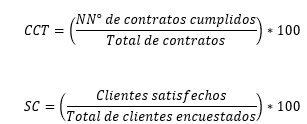

|
DOC 008| Recursos de Medición KPIs
|
Ver. 000
|
|
|
Creado por EGC | Aprobado por CEO
|
Fecha: 01.12.2024
|
Contenido
Índice de Cumplimiento de Recursos (ICR)
% de acciones correctivas implementadas en plazo.
% de contratos cumplidos en tiempo y forma.
% de satisfacción del cliente.
% de cumplimiento de planes de seguridad.
Tiempo promedio de respuesta ante incidentes.
% de cumplimiento de actividades programadas.
Índice de satisfacción del cliente.
% de reclamos resueltos a tiempo.
Índice de satisfacción del cliente postventa.
% de ejecución presupuestaria.
Cumplimiento de obligaciones fiscales.
% de entregas a tiempo.
% de cumplimiento de especificaciones técnicas.
% de cumplimiento del plan de capacitación.
Tasa de rotación de personal.
Nombres de Indicadores
% de cumplimiento del plan de mantenimiento.
% de disponibilidad de equipos operativos.
Tasa de disponibilidad de sistemas.
Tasa de resolución de incidentes en tiempo.
Nombre
del Indicador
Índice de Cumplimiento de Objetivos
Estratégicos del SGC

Justificación:
Un nivel de cumplimiento superior al 90% indica un compromiso efectivo
con el SGC. Un cumplimiento entre 75% y 89% sugiere áreas de mejora.
Un cumplimiento inferior al 75% requiere revisión de estrategias
y recursos.
Fuente de Datos: Informes de revisión de la dirección
y auditorías internas.
Frecuencia de Evaluación: Trimestral, en reuniones de revisión
del SGC.
Plan de Acción: Si el indicador está en rango no
aceptable (<75%), la Alta Dirección debe revisar recursos y
tomar acciones correctivas.
Nombre
del Indicador
Índice de Cumplimiento de Recursos
(ICR)
.png)
Justificación: Este indicador evalúa la proporción
de recursos disponibles y utilizados en comparación con los recursos
planificados. Un DR ? 90% asegura que los recursos asignados son suficientes
para alcanzar los objetivos del SGC, mientras que valores menores indican
la necesidad de ajustes en la planificación y asignación
de recursos.
Frecuencia de Evaluación: Trimestral, en las reuniones de
seguimiento del SGC.
Nombre
del Indicador
% de acciones correctivas implementadas en plazo.

Justificación: Un nivel de cumplimiento superior al 90%
indica un compromiso efectivo con la mejora continua. Un cumplimiento
entre 75% y 89% sugiere áreas de mejora. Un cumplimiento inferior
al 75% requiere revisión de estrategias y recursos.
Fuente de Datos: Informes de auditoría, actas de revisión,
registros de acciones correctivas.
Frecuencia de Evaluación: Trimestral, en reuniones de seguimiento
del SGC.
Plan de Acción: Si el indicador está en rango no
aceptable (<75%), la Alta Dirección debe revisar recursos y
tomar acciones correctivas.
Nombres de Indicadores
% de contratos cumplidos en tiempo y
forma.
% de satisfacción del cliente.

Justificación:
Un cumplimiento alto en ambos indicadores refleja un desempeño
eficiente en la gestión de contratos y la satisfacción del
cliente. Resultados inferiores a las metas requieren análisis y
acciones correctivas inmediatas.
Fuente de Datos: Encuestas de satisfacción, auditorías
internas, registros de contratos.
Frecuencia de Evaluación: Trimestral, con revisión
por la Alta Dirección.
Plan de Acción: Si los indicadores están fuera de
rango, se revisarán los recursos asignados y se desarrollarán
planes de mejora.
Nombres
de Indicadores
% de cumplimiento de planes de seguridad.
Tiempo promedio de respuesta ante incidentes.

Justificación: Un cumplimiento superior al 95% en los planes
de seguridad indica eficiencia en la ejecución. Un tiempo promedio
de respuesta menor a 5 minutos refleja una atención oportuna a
incidentes.
Fuente de Datos: Reportes de operaciones, registros de incidentes,
auditorías internas.
Frecuencia de Evaluación: Mensual, con revisión trimestral
por la Alta Dirección.
Plan de Acción: Si los indicadores están fuera de
rango, se evaluarán recursos y procesos, implementando mejoras
según corresponda.
Nombres
de Indicadores
% de cumplimiento de actividades programadas.
Índice de satisfacción del cliente..

Justificación:
Un alto porcentaje de cumplimiento refleja una adecuada ejecución
de los servicios. Un índice de satisfacción del cliente
superior al 90% asegura que los servicios cumplen con las expectativas
y requisitos establecidos.
Fuente de Datos: Informes de supervisión, encuestas de satisfacción,
auditorías internas.
Frecuencia de Evaluación: Mensual, con revisión trimestral
por la Alta Dirección.
Plan de Acción: Si los indicadores están fuera de
rango, se revisarán recursos y procedimientos, implementando mejoras
según corresponda.
Nombres
de Indicadores
% de cumplimiento de tiempos de respuesta.
% de documentos actualizados.

Justificación: Un cumplimiento superior al 95% en tiempos
de respuesta asegura la eficiencia en la gestión. Un alto porcentaje
de documentos actualizados refleja el control y organización del
proceso.
Fuente de Datos: Informes de gestión, auditorías
internas, registros de seguimiento.
Frecuencia de Evaluación: Trimestral, con revisión
semestral por la Alta Dirección.
Plan de Acción: Si los indicadores están fuera de
rango, se revisarán recursos, procedimientos y estrategias para
implementar mejoras.
Nombres
de Indicadores
% de reclamos resueltos a tiempo.
Índice de satisfacción del cliente postventa.

Justificación: Un cumplimiento del 95% en resolución
de reclamos asegura un servicio postventa eficiente. Un índice
de satisfacción superior al 90% refleja la fidelización
del cliente y la efectividad del proceso.
Fuente de Datos: Registros de reclamos, encuestas postventa, auditorías
internas.
Frecuencia de Evaluación: Trimestral, con revisión
semestral por la Alta Dirección.
Plan de Acción: Si los indicadores están fuera de
rango, se revisarán procedimientos y se implementarán estrategias
de mejora.
% de ejecución presupuestaria.
Cumplimiento de obligaciones fiscales.

Justificación: Un nivel de ejecución presupuestaria superior al 90% asegura una gestión financiera eficiente. El cumplimiento del 100% de las obligaciones fiscales garantiza la conformidad legal y evita sanciones.
Fuente de Datos: Registros contables, reportes de cumplimiento fiscal, auditorías internas.
Frecuencia de Evaluación: Trimestral, con revisión anual por la Alta Dirección.
Plan de Acción: Si los indicadores están fuera de rango, se revisarán los procedimientos financieros y se implementarán acciones correctivas.
Nombres de Indicadores
% de entregas a tiempo.
% de cumplimiento de especificaciones técnicas.

Justificación:
Un nivel del 95% en entregas a tiempo y 98% en cumplimiento de especificaciones
asegura un suministro confiable y de calidad.
Fuente de Datos: Informes de recepción de bienes, registros
de inspección, contratos.
Frecuencia de Evaluación: Trimestral, con revisión
anual por la Alta Dirección.
Plan de Acción: Si los indicadores están fuera de
rango, se desarrollarán estrategias de mejora o reemplazo de proveedores.
Nombres
de Indicadores
% de cumplimiento del plan de capacitación.
Tasa de rotación de personal
 .
.
Justificación:
Un cumplimiento del 90% en el plan de capacitación garantiza
el desarrollo del talento humano. Una tasa de rotación menor al
10% indica estabilidad laboral.
Fuente de Datos: Registros de capacitación, reportes de
nómina y base de datos de empleados.
Frecuencia de Evaluación: Semestral, con reportes anuales
para la Alta Dirección.
Plan de Acción: Si los indicadores están fuera de
rango, se implementarán estrategias de mejora en reclutamiento,
capacitación y clima laboral.
Nombres
de Indicadores
% de cumplimiento del plan de
mantenimiento.
% de disponibilidad de equipos operativos.

Justificación: Un cumplimiento del 95% en mantenimiento
garantiza la operatividad de los equipos. Una disponibilidad del 98% asegura
que las operaciones no se vean afectadas.
Fuente de Datos: Informes de mantenimiento, registros de inventarios.
Frecuencia de Evaluación: Trimestral, con revisión
anual.
Plan de Acción: Si los indicadores están fuera de
rango, se implementarán medidas correctivas como ajustes en cronogramas
o adquisiciones adicionales.
Nombres de Indicadores
Tasa de disponibilidad de sistemas.
Tasa de resolución de incidentes en tiempo.

Justificación:
Una disponibilidad del 99% asegura operaciones continuas. Una tasa de
resolución del 95% garantiza la eficiencia del soporte técnico.
Fuente de Datos: Registros de sistemas, reportes de incidentes,
logs de actividad.
Frecuencia de Evaluación: Trimestral, con reportes semestrales.
Plan de Acción: Si los indicadores están fuera de
rango, se implementarán planes de mejora en infraestructura o procesos
de soporte.
| Versión | Fecha | Asiento | Aprueba |
| 000 | 01.12.2025 | Original | CEO |